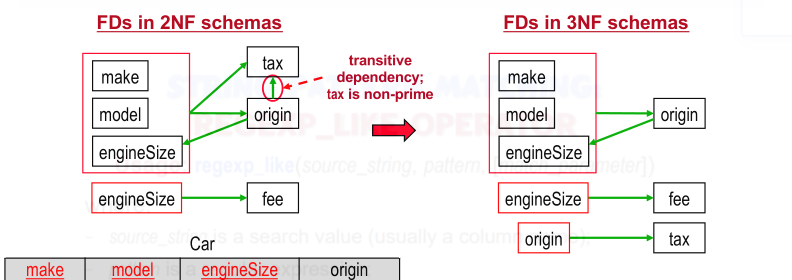
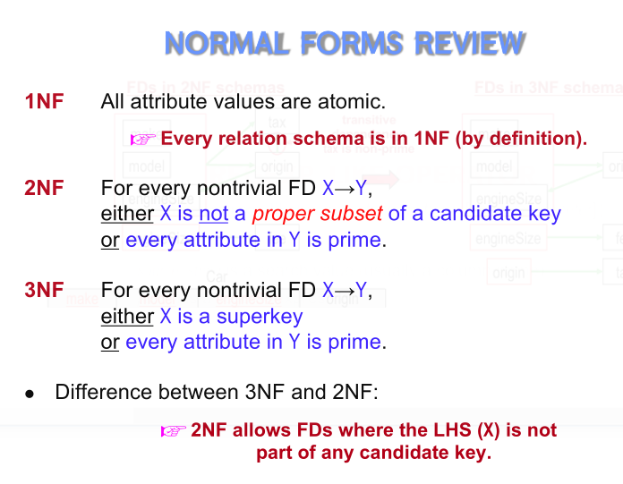

Lecture 9, Functional Dependency
X->Y, X is determinant set, Y is dependent set
-
At most one value of Y for any X
-
eg. a supervisor can only have 1 specialization, but many supervisor can specialize at the same thing
-
If Y is a subset of X, then it is trivial
-
We care about non-trivial ones
-
Concept of a Key in a table
-
Any set of attribute that determines whole tuple -> SuperKey
-
Minimal set that determines entire tuple is candidate key
- multiple, choose one as primary key
-
Reflexivity, Augmentation and Transitivity are sound and complete
-
Attribute Set
- X+ -> set of attr that can be functionally determined by X under F
- include itself, and what it can determine
- Algo: Check one level at a time
- Can be used to check for super key
Redundancy: if can be inferred, then remove!
Canonical Order
- no redundancy, every other set would be the same
- left side of each functional dependency is unique (no duplicate left side!)
- find and replace, use union rule or find extraneous ones
Lecture 10, cont.
Prime Attribute - part of any candidate key (any set that minimally determines hole tuple)
Partial: VZ -> A, Z->A is partial
Transitive: X->Y, X->A Y->A is transitive
Normalization: reduce redundancy, should be lossless
Normal form does not mean good design!
Design guidelines:
- Clear Semantics for Attributes
- Design so its easy to define a schema meaning, attrs should be related
- Easy to explain schema = good!
- Minimize Use of Null Values
- If not relatable, there will be a bunch of null value, which should be avoided
- Minimize Redundancy
- Lossless Decomp
- The common attribute between the decomposed relations must be a superkey for R1 or R2
- lossless join back to initial relation
- Preserve Functional Dependencies
- if any gets lost, then things are harder to enforce
- the decomp should allow for FD checks to persist
First Normal Form: all attributes are atomic
- no multi valued or composite attributes
- Relation Schema are 1NF by default
Second Normal Form: non-prime attributes are fully functionally dependent on every candidate key.
- subset of candidate key cannot determine a non-prime attribute
- No partial dependency, where a column can deend on one of the primary keys
- if {X, Y} are candidate keys, X -> A where X is a proper subset and A is not a prime attribute would fail it
- if transitive (A->B where A, B are both non-prime, then its still fine)
- X -> A, X is not proper subset (missing at least 1 from whole set) or A is prime
Proper subset iff every element but at least one in the subset
Third Normal Form: every non-prime attribute of R is nontransitively dependent on every candidate key of R
- basically, the all FD of X -> A, X is super key or A is prime
- if X ->A, X must be a superkey of a schema, or A must be a part of candidate keys
Algo:
- create a relation for each FD
- if no schema has a candidate key for R (so find the candidate key!)
- choose an candidate key, and add that relation
Redundancy still exist in 3F, in opposite direction

Lecture 11, Part 3

First Normal Form: The information is stored in a relational table and each column contains atomic values, and there are not repeating groups of columns.
Second Normal Form: The table is in first normal form and all the columns depend on the table’s primary key.
Third Normal Form: the table is in second normal form and all of its columns are not transitively dependent on the primary key
BCNF - Boyce-Codd
- Basically, the LHS has to be a super-key, no extraneous on RHS
- No redundancy
- has to be 3NF first
- BEST NORMAL FORM
- always a lossless conversion
- All FD may not bre preserved
- Checking F is sufficient (no need for F+), check if the super key is the same
- for derived schemas, check F+
Algorithm
- start with initial schema
- for each R in the schemas, if X->Y violate BCNF,
- take away table, add schema of old table with out Y and add (X, Y) -> X is now a candidate key
to see if something is BCNF using F is fine, for actual decomposition, need F+
Sometimes updating BCNF is inefficient
- you can go back to 3NF, which cost more space
- you can use a materialized view, just less prone to errors
Test:
- For every attribute in Ri, check if X+ include no attribute of Ri−X or all attributes of Ri